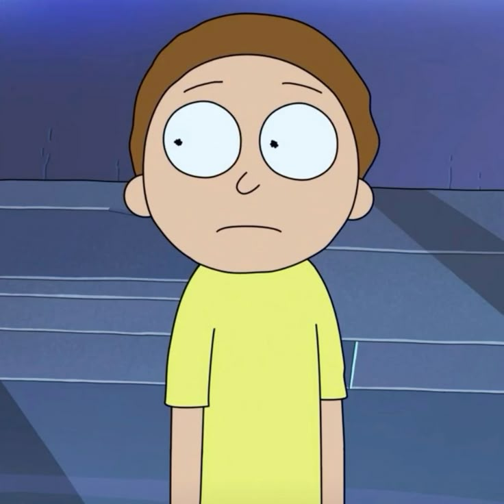
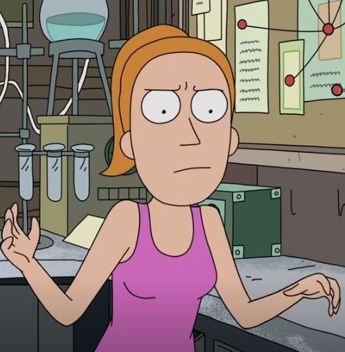
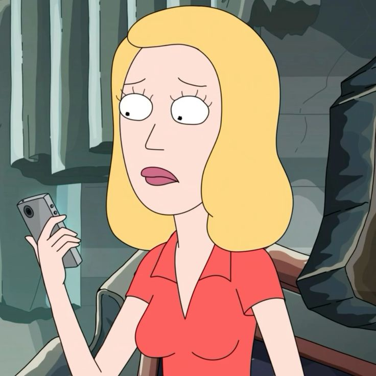
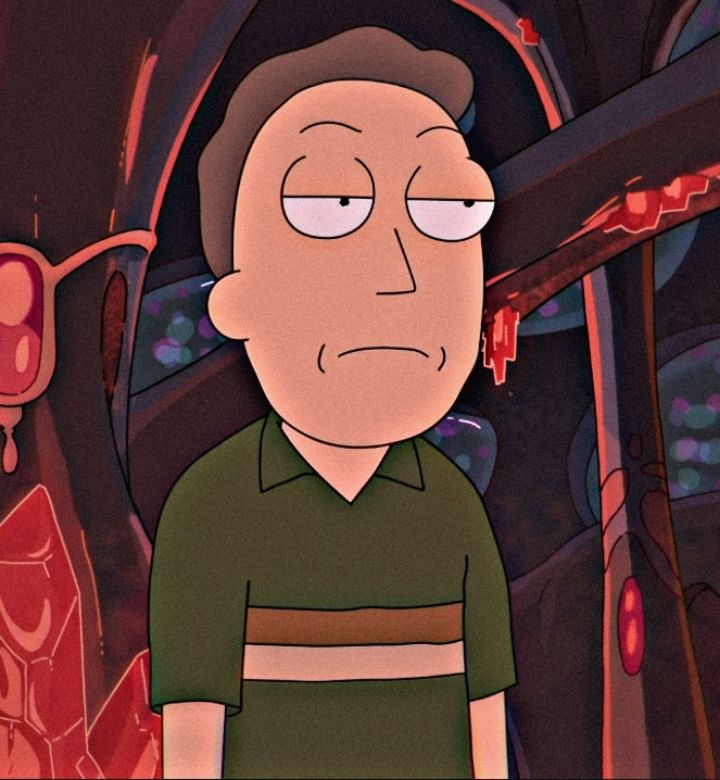

Galeria de Variantes Identificadas




Abaixo estão listados os membros da família Smith da Dimensão C-137. Cada um desempenha um papel fundamental no ecossistema de caos gerado por Rick Sanchez, seja como cúmplice involuntário ou como fonte de frustração constante.
As tabelas a seguir catalogam o nível de ameaça e a localização de cada variante conforme os registros da Cidadela dos Ricks, atualizados após a última incursão interdimensional.
Tabela 01: Níveis de Ameaça
| Codinome | Nível de Perigo | Classe |
|---|---|---|
| Rick C-137 | Máximo | Alpha |
| Morty Malvado | Extremo | Desconhecida |
Tabela 02: Logística de Portais
| Destino | Custo de Fluido |
|---|---|
| Dimensão Cronenberg | 50ml |
| Mundo Purgatório | 120ml |